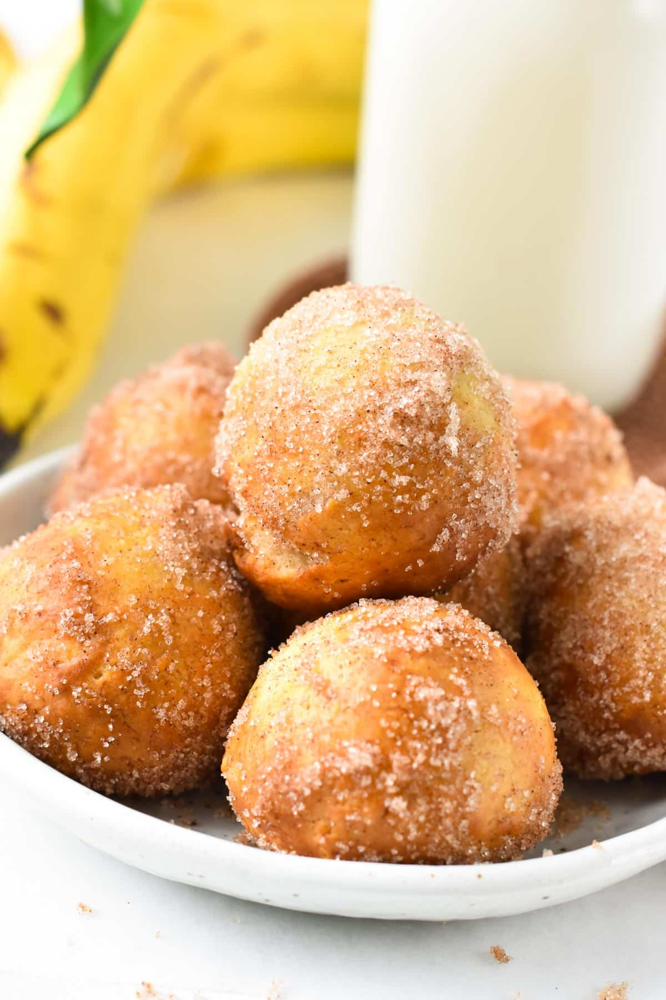

Banana Donut Holes

These 2-Ingredient Banana Donut Holes are easy air fryer banana bread treats perfect to fix your banana bread craving in less than 15 minutes.
½ cupmashed banana, about 1 large½-¾ cupself-rising flour½ tspcinnamon¼ cupsugar2-3 tbspcoconut oil
Mash the banana into a smooth puree, make sure you get ½ cup or the donut batter won’t come together with the same ratio of flour.
Add in the flour and stir with a rubber spatula at first, until it starts to form lumps. Now, oil your hands and knead with your slightly oiled hands to form a dough ball. The dough is sticky and moist, but that’s normal don’t over-add flour! If it sticks to the finger, keep kneading, using a bit of oil to smooth the dough and form a ball. Eventually, if it’s really too moist add up to a max of 2-3 tablespoons or the dough turns bready. You should work this dough like foccacia, using oil to avoid sticking to finges and shape, but the dough should stay moist and elastic, not saturated by flour.
Grease your hand with melted coconut oil, grab about a tablespoon of dough, roll it into a ball, and place it on a plate covered with parchment paper. Repeat until all the dough has been turned into balls. Spray avocado oil on top of the balls.
Spray oil in the air fryer basket and place the oiled donut holes in the basket, leaving 1 inch (3 cm) apart as they expand.
Air fry at 350°F (180°C) for 7 minutes or until puffy and golden brown. They will have a rocky shape and be dry outside, and some will not be as round as balls; that’s normal.
To make these banana bread balls taste like donuts, brush each warm ball with melted coconut oil using a pastry brush. Then, roll the warm, oiled balls into cinnamon sugar to coat evenly. Serve warm immediately with some vanilla ice cream.